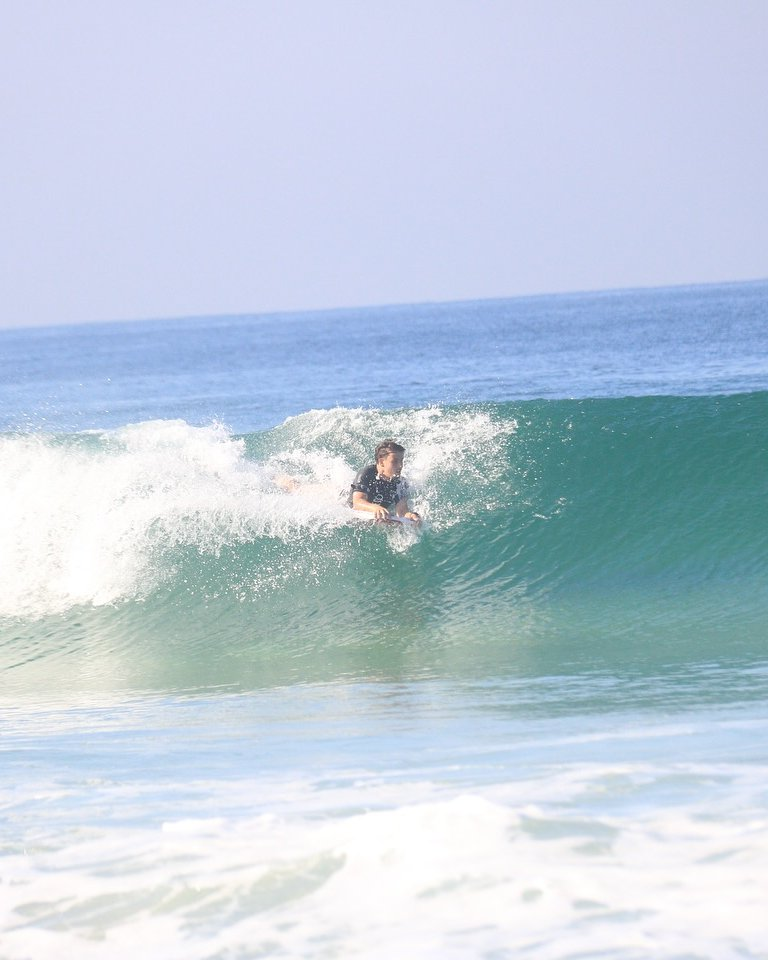
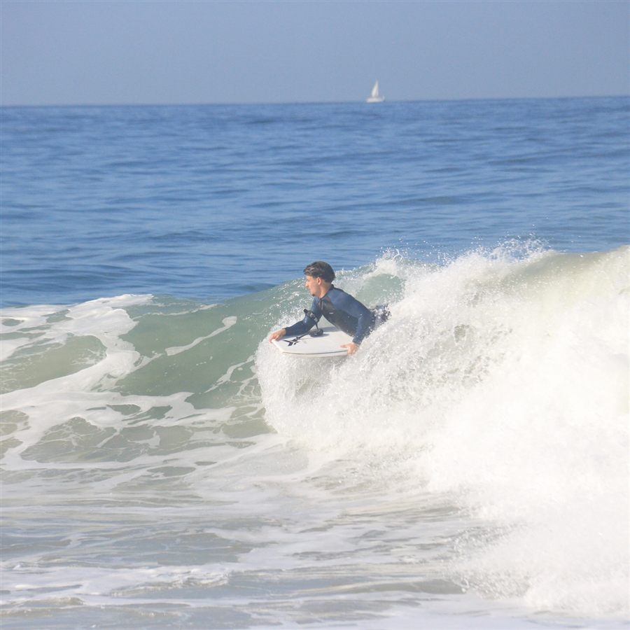
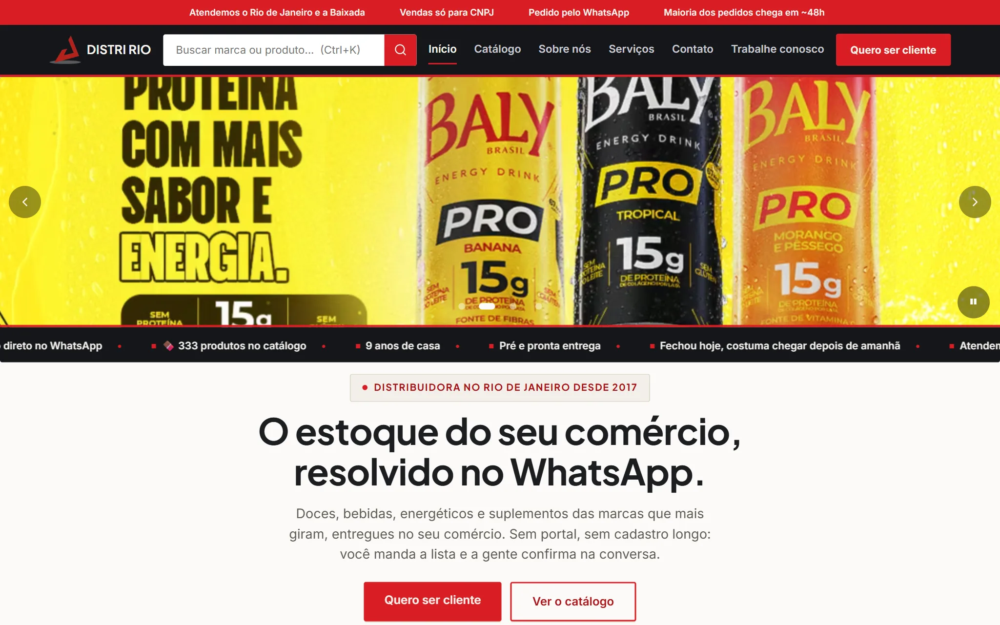
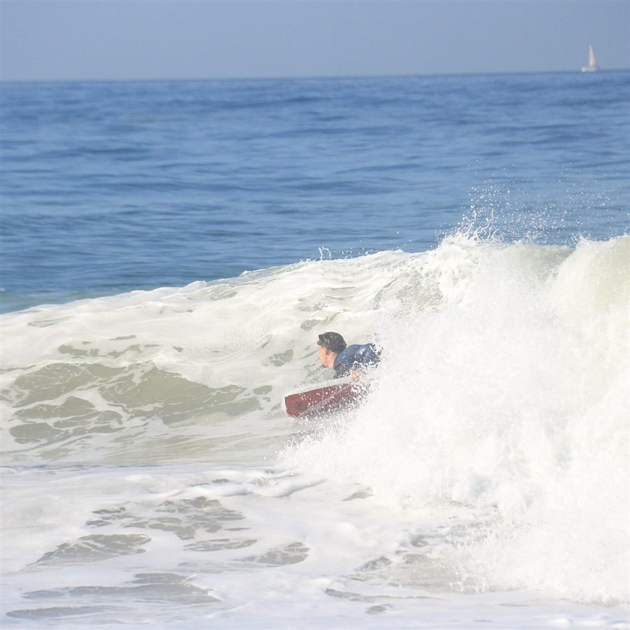
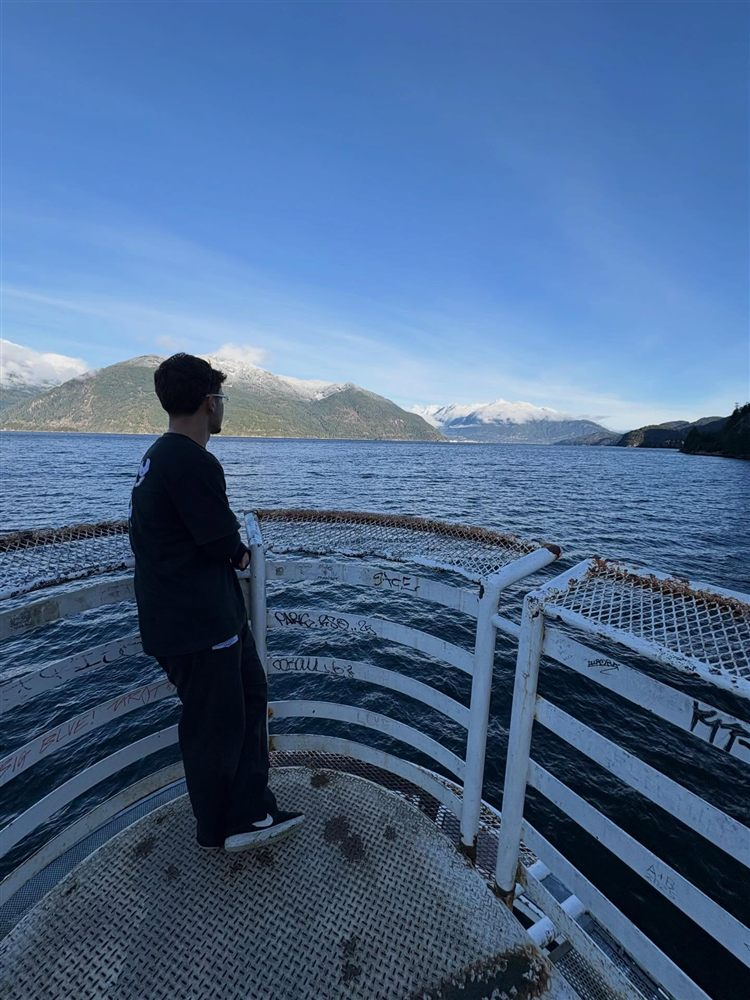
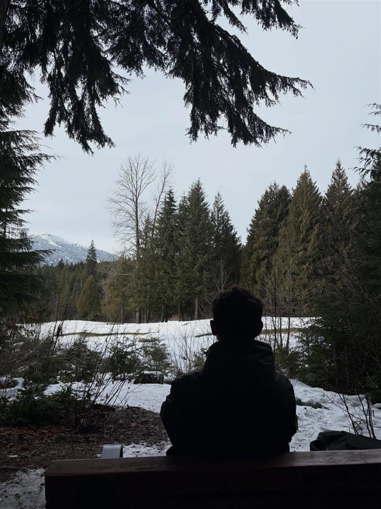
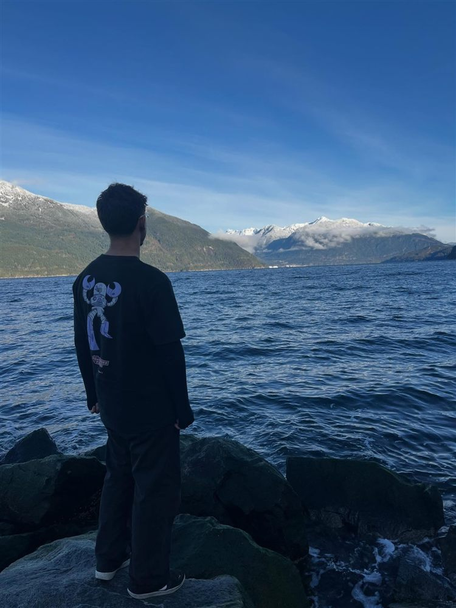
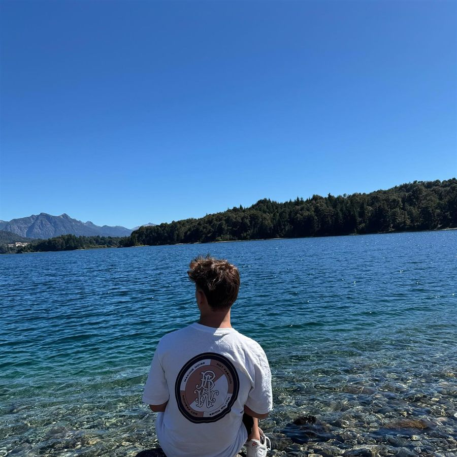
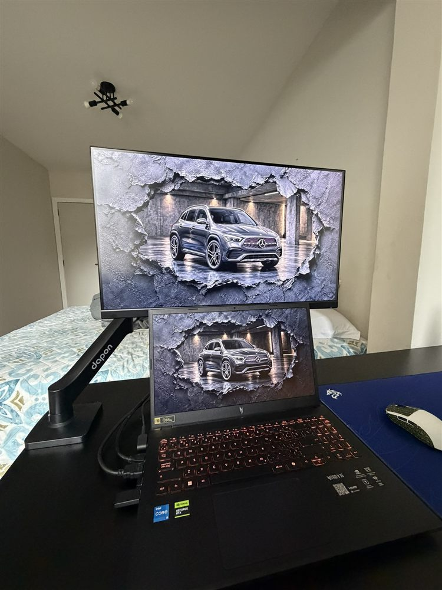
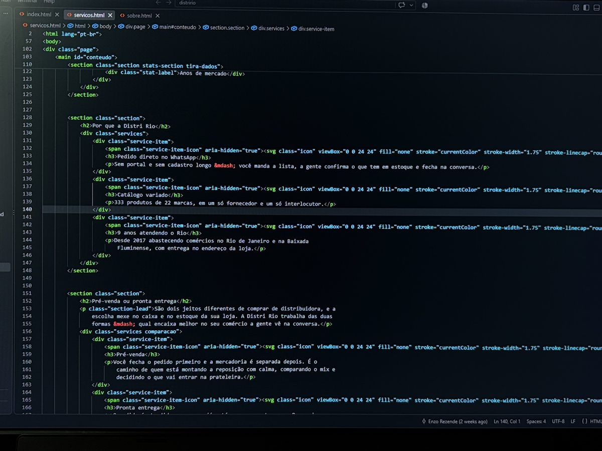

Análise e Desenvolvimento de Sistemas, em andamento · campus Barra da Tijuca
RIO · DESENVOLVEDOR WEB
Enzo Rezende
Faço sites que colocam negócio no ar.
Sou desenvolvedor web do Rio de Janeiro e estudante de Análise e Desenvolvimento de Sistemas na UVA.
Aberto a estágio no Rio (presencial ou híbrido) ou remoto, e a projetos de site.

06:30 · SECRETO
Antes do código, o mar.
Pego onda de bodyboard no Secreto. Há uma pessoa de verdade por trás do código.

14:00 · DO ARQUIVO AO AR
Distri Rio
Site e catálogo de uma distribuidora de doces, bebidas, energéticos e suplementos que atende comércios do Rio e da Baixada Fluminense.
Ver o site · distririo.com.br ↗

- 01
Um arquivo de dados.
data/produtos.json reúne o catálogo. Exemplo: Trident 5S, Mondelez, Menta, Hortelã, Tutti-Frutti.
{ "id":"trident-5s", "nome":"Trident 5S", "marca":"Mondelez", "linha":"Menta, Hortelã, Tutti-Frutti" } - 02
O arquivo vira páginas.
Um script em Node gera 333 páginas de produto e 19 páginas de marca a partir do mesmo JSON.
333 páginas de produto
- 03
A busca encontra.
Busca por nome, Ctrl+K para abrir e filtros por seção e marca.
trident - 04
O pedido vira conversa.
A lista de pedido vira mensagem de WhatsApp. Antes, pede CNPJ, nome e WhatsApp.
Olá! Quero fazer um pedido… - 05
Conferido e no ar.
A cada push, GitHub Actions confere build, links, imagens e fluxos num Chrome sem interface.
60 segundos até publicar no GitHub Pages
Também há SEO técnico (sitemap e dados estruturados), formulário de currículos por e-mail, cookies de medição só depois do aceite (LGPD) e 9 páginas principais.
16:00 · POSSO FAZER PARA VOCÊ
Um site pronto para trabalhar.
Na Distri Rio, coloquei estas partes em uso:
- 01Site e páginas responsivas
- 02Catálogo gerado a partir de dados
- 03Busca e filtros
- 04Pedido pelo WhatsApp
- 05SEO técnico
- 06Testes e publicação automatizados
18:00 · ESTUDO
Catálogo de Séries
Projeto da Alura (2025): dados em JSON, busca por nome, filtro por gênero e detalhes numa janela.
[preencher: próximo projeto]

18:30 · TECLADO DE TRABALHO
Ferramentas que já usei.
Selecione uma tecla para ver o contexto.
Escolha uma tecnologia.
20:00 · VIDA E CAMINHO
Do Rio a Vancouver e de volta.
Catálogo de Séries (2025)
Projeto web · 2026
Fevereiro a julho de 2026 · curso de inglês e trabalho
De volta ao Rio · inglês B2
Argentina · Canadá · França · Itália · México · Portugal
21:00 · FORA DA TELA
Lugares que levo comigo.







22:00 · PRÓXIMA PARADA
Vamos conversar.
Aberto a estágio no Rio (presencial ou híbrido) ou remoto, e a projetos de site.